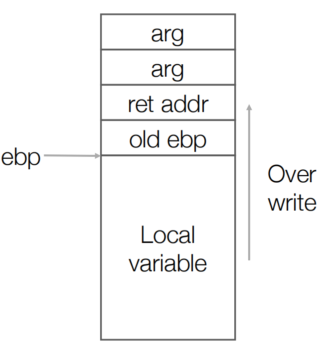
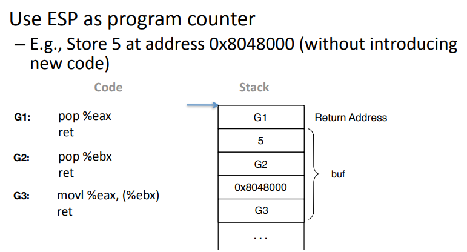
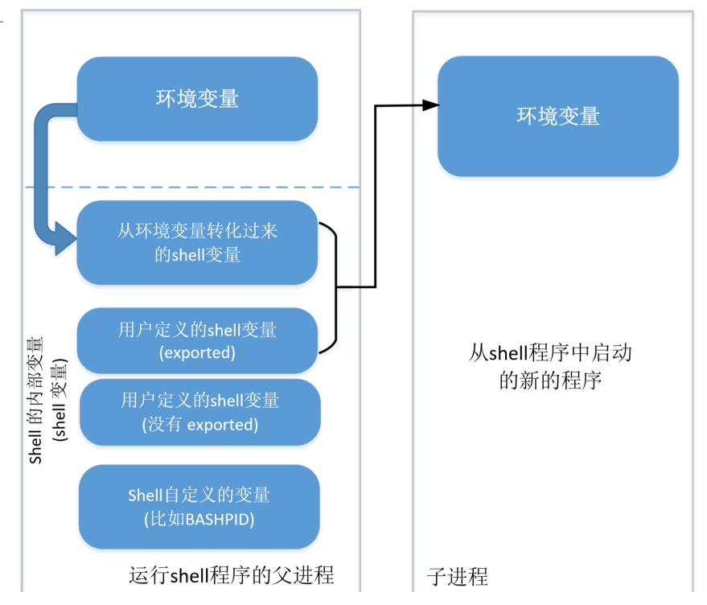

攻击软件安全
从对抗的视角审视软件。可利用的bug，就是漏洞，介绍一些常见的漏洞和利用方式。
Buffer Overflow
x86-32的栈布局，其他的架构也是类似的。
x86-32函数的最后的清理工作，A&AT格式。
leave ; mov %ebp, %esp 清空栈内容
; pop %ebp 恢复上一个函数的ebp
ret ; pop %eip 跳转到返回地址
函数开头的工作
push %ebp ; 保存上一个函数的ebp
mov %esp, %ebp ; 设置这个函数的ebp
一般有下面的利用办法：
- 修改返回地址。
- 修改函数指针。
- 修改局部变量，这样就不用改变正常的控制流。这依赖于程序的逻辑。
- 修改堆上数据。
canary
在old ebp和ret addr之间放置一个canary。这样在栈溢出的时候首先会覆盖canary然后才能覆盖ret addr。编译器会插入在返回前检查canary的代码。
虽然canary是一个运行时产生的值，但是是有可能通过其他的方式泄露出来的。并且在同一个进程中不同栈帧的canary都是相同的，并且fork()出的子进程和父进程的canary也相同，因为fork是完全的拷贝。
一般来说canary为0x00 ?? ?? ?? (32 bits)
DEP(NX)
冯诺依曼架构不区分数据和代码。为了解决这个问题，硬件支持了NX bit，让一个虚拟地址对应的页表项，要么可写W，要么可执行X。这样就可以把栈标记成不可执行。
NX可以完全防止code-injection attack，所以现在code-injection attack已经过时了。这样攻击者就只能重用代码，code-reuse attack。比如，就可以利用libc中的代码。这就是ret2libc。
Ret2libc
libc中的一些函数特别好用。e.g. execve("/bin/sh"), system("/bin/sh")。怎么利用呢？三个步骤：
- find the address of the
systemfunction （或者其他的函数） - find the string
"bin/sh"（或者其他的命令） - pass
"/bin/sh"tosystemfunction
怎么找字符串
- 可以通过环境变量。libc中有一个全局变量
environ，通常他会有"SHELL=/bin/bash"这样的或类似的环境变量。environ是一个字符数组指针，即char **，但是你不知道SHELL=/bin/bash在哪一个。 - 事实上，libc中就有
"/bin/sh"字符串。
怎么传递参数
需要根据函数调用约定，给栈/寄存器做好布局。
找到libc函数地址 with ASLR without PIE
怎么找libc中函数的地址呢？通过plt和got。
plt和got是什么？简单的认为plt是一段代码，用函数指针去调用真正的函数地址，got是一堆数据，就是一堆函数指针。plt call got。关于他们的具体细节，可以参考动态链接这篇文章。
假设程序没有PIE，那么程序本身的加载地址是不变的。所以plt和got表的地址也是不变的。那么就可以想办法把got表的某项输出出来，就是libc的某个函数的地址。
如果你能知道libc的版本，你就知道libc的整个布局，那就可以算出你要找的别的字符串/函数的地址。有一些在线工具可以帮你做这个事情。
e.g. 通过栈溢出，分别修改两次栈布局：第一次将返回地址改成puts()（准确的说是plt中的puts entry），参数改成got表地址，puts的返回地址改成main，这样就可以泄露libc的地址；第二次将返回地址改成libc中的system()，参数改成"/bin/sh"。如下图。

ROP code reuse
ROP = Return Orient Programming
ret2libc其实是一种特殊的ROP。ROP其实可以返回到任何以ret指令结尾的指令序列(gadget)，ret2libc其实是返回到了函数开头。而且在x86这种不定长指令的架构上，ROP还可以返回到一条指令的中间，这时CPU会将接下来的指令解码成其他的指令。
ROP的基本思路是，通过构造栈的布局，让栈上分布一系列返回地址。返回的时候先到第一个gadget，第一个gadget返回之后又跳到第二个gadget。比如下面这个例子，三个gadget就是一个store指令。你可以利用这些小片段，形成你的"ROP虚拟机"，如果你的小片段足够多，是可以图灵完全的。另外，除了源程序，libc中也有很多的ROP gadget可以使用。

一种利用code reuse的利用方式，是通过code reuse调用libc中的mprotect函数，用它关掉DEP，再进行code injection。
- 防御ROP的一种方式叫做CFI(Control Flow Integrity)。基本思路就是校验控制流，检测非法的控制流。在每一条ret指令之前校验。
- 另一种方式是做随机化。可以随机化堆、栈、代码，可以在运行时做、编译时做。
BROP
Blind RO, 是在没有source code/binary的情况下做ROP。我们的基本思路是，leak binary，然后当做普通的ROP去做。假设我们和目标程序远程通过socket通信，所以下面的崩溃=连接断开=从socket中读取到EOF。
下面做的假设包括：能看到puts的结果（标准输出，或者可以用其他的方式获取信息例如Socket）；no-pie，每次崩溃之后内存布局不变（针对通过fork来应对请求的架构）；当然还要有缓冲区溢出漏洞。这些条件如果不满足需要通过其他的方法替换。
Leak the binary from the remote server:
-
Find the offset to overwrite the return address: 如果没有canary并假设有Buffer Overflow，我们不停的增加输入数据的长度直到程序崩溃（覆盖的返回地址非法，就会崩溃，我们覆盖到栈上返回地址时，程序大概率会崩溃），这时我们就找到了return address的地方。
- What if we have stack canary? 那还需要先猜(试)出canary
-
Find the stop gadget：找一个覆盖后不会崩溃的返回地址，只能一个一个试过来。（stop gadget就是指一段不会崩溃的代码片段，大多数返回地址都会导致崩溃）。
-
Find the BROP gadget：指的是下面一段代码，他是x86_64常见的代码片段。这个片段要怎么找呢？构造
返回地址?-空出6个位置-stop gadget地址，然后不断的一个一个试返回地址，如果不崩溃，那么大概率找到了。（基于假设x86汇编中这一段代码常见，而且一般来说连续的6个pop只有这样的）5b pop %rbx 5d pop %rbp 41 5c pop %r12 41 5d pop %r13 41 5e pop %r14 41 5f pop %r15 c3 retq这个片段的特殊之处在于，他中间包含了其他的常用gadget。最后两个/四个字节可以分别构成下面的gadget。可以控制函数的前两个参数。
5f pop %rdi # 第一个参数 c3 retq 5e pop %rsi # 第二个参数 41 5f pop %r15 c3 retqSystem V AMD64 ABI(Linux使用) 的前六个整型或指针参数依次存储在 RDI, RSI, RDX, RCX, R8, R9
-
Find the puts plt address:（注意这里要求程序没有开启PIE，没有开启PIE的程序装载的起始地址一般为0x400000，开启之后可能会装载在任意地址。）。
这时我们构造栈结构为
brop gadget的后2字节-0x400000-puts?-stop gadget。然后不断的试puts的地址，如果我们发现输出的开头为ELF那么说明我们找到了puts的地址。 -
Dump the binary: 然后不断的puts，注意puts遇到
\x00就会停止输出。所以我们发现输出结束就知道下一个字节为0。然后不断的更改puts的参数，就可以把整个程序dump出来。
Format String
int printf(const char *format, ...);
int fprintf(FILE *stream, const char *format, ...);
int sprintf(char *str, const char *format, ...);
int snprintf(char *str, size_t size, const char *format, ...);
format的格式：%[parameter][flags][field width][.precision][length]type。下面是一些利用Bug需要的内容。
| Parameter | Meaning |
|---|---|
| parameter = n$ | n是用这个格式说明符（specifier）显示第几个参数；这使得参数可以输出多次，使用多个格式说明符，以不同的顺序输出。 如果任意一个占位符使用了parameter，则其他所有占位符必须也使用parameter。 |
| field width | 给出显示数值的最小宽度，利用他构造确定个数字符的输出 |
| type = x | 16进制unsigned int。'x'使用小写字母；'X'使用大写字母。利用他来消耗栈上参数 |
| type = s | 输出null结尾字符串直到精度规定的上限；如果没有指定精度，则输出所有字节。 |
| type = n | 输出字符，但是把已经成功输出的字符个数写入对应的整型指针参数所指的变量。利用它完成任意写 |
| type = c | 输出字符类型 |
| length = hh | 对于整数类型，printf期待一个从char提升的int尺寸的整型参数。 |
| length = h | 对于整数类型，printf期待一个从short提升的int尺寸的整型参数。 |
C语言参数入栈顺序是从右往左压栈，这让实现可变参数比较简单。第一个参数的位置是固定的，在栈的返回地址上面。然后就可以根据第一个参数的内容指示的参数，不断的读取栈的其他参数。
如果是64位，系统调用参数的传递方式改成使用64位寄存器进行传递，依次为rdi, rsi, rdx, r10, r8, r9。调用号放在rax。函数的参数传递方式rdi, rsi, rdx, rcx, r8, r9，多于6个用栈传递。
如果你可以控制format参数，就可以发起Format String攻击。他可以对memory做任意的read和write，这个漏洞的品相很好。
一般来说，利用方式有：
- 把程序中某函数的GOT地址传进去，然后获得该地址所对应的函数的虚拟地址。（注意，如果没有开启PIE那么GOT的地址是固定的，但是GOT的内容可能是lazy binding的，需要函数执行一次之后GOT表才是函数的虚拟地址）然后根据函数在 libc 中的相对位置，计算出我们需要的函数地址（如
system()）。 - 读写全局的函数指针
- 读写虚表指针（C++）
任意读
%08x,%08x,%08x,%08x不停的往上读栈的内容。AAAA%08x,%08x,%08x,%08x不停的往上读栈的内容，并且发现读到了41414141，可以计算出我们字符串buffer的开头是第几个参数的位置。
pointer+%s，读特定地址的内容
任意写
例如，我现在想要写0x12345678这个地址（4字节）上的内容。修改成0x11AA88FF。
\x78\x56\x34\x12 // 地址最好按照要写的数据大小，从小到大排序，否则用后面n$来规定
\x79\x56\x34\x12
\x7A\x56\x34\x12
\x7B\x56\x34\x12
%1${0x11}c %{x+3}$hhn // 这里的x要计算，算format在栈上的位置
%1${0x88-0x11}c %{x+1}hhn
%1${0xAA-0x88}c %{x+2}hhn
%1${0xff-0xAA}c %{x+3}hhn
可以看一下下面这个任意写payload的构造
def any_write_bytes(n: int, ptr_data: Dict[int, bytes]) -> bytes:
"""
Args:
n (int): 可以控制的buffer的开头是printf的第几个参数
ptr_data (Dict[int, bytes]): *(char*) ptr = (char) data
Returns:
bytes: payload
"""
l = []
for p in ptr_data:
l.append((int(ptr_data[p]), p))
l.sort()
payload = b""
for i in range(0, len(l)):
if i == 0:
# assert l[i][0] > 4 * len(l)
payload += "%1${:04}c%{:03}$hhn".format(
l[i][0], n + i + len(l) * 4
).encode()
else:
payload += "%1${:04}c%{:03}$hhn".format(
l[i][0] - l[i - 1][0], n + i + len(l) * 4
).encode()
for i in range(0, len(l)):
payload += p32(l[i][1])
return payload
Integer Overflow
整数溢出本身是很好理解的，不过要分成有符号溢出和无符号溢出。整数溢出是普遍的，别的语言可能不会有栈溢出，但是几乎所有语言都会有整数溢出。
尤其是当一个变量指示的意思是size/index的时候，如果溢出了，就可能会产生严重的问题。当然还有很多其他的问题也会因为整数溢出漏洞产生。
在下面这个例子中，如果输出的参数太长了，导致整数溢出，那么就会导致堆溢出。
int main(int argc, char* const *argv) {
unsigned short int total;
total = strlen(argv[1]) + strlen(argv[2]) + 1;
char * buff = (char *) malloc(total);
strcpy(buff,argv[1]);
strcat(buff,argv[2]);
}
还有一个问题，就是如果我们用int等有符号数，作为数组的index的时候，当符号数是负数的时候，就可能会访问到一些奇怪的东西。
Heap Overflow
有时你可以覆盖堆上Metadata完成漏洞利用，有时可以覆盖堆上的普通数据（比如，一个函数指针，覆盖了他劫持控制流）完成漏洞利用。
如果一个内存区域已经被Free了，而后续又被使用。被Free的指针又叫做悬挂指针。而悬挂指针，可能指向的是后续又分配出来的内存。在一个复杂的工程中，指针可能有下面的使用模式。所以Use After Free很难静态的检测出来。我想起了Scala的贷出模式和Rust的所有权模型。
- Alloc in one function
- Free in another function
- Use in a third function
如果对一个指针Free两次，也会发生未定义的事情。可能会把Metadata搞乱。Linux中在释放内存使用了大量的goto技巧，用来错误处理时释放恰当的资源。
环境变量攻击
环境变量可以看作是Map<String,String>，是字符串到字符串的映射。在C语言中，我们可以用environ这个全局变量来找到环境变量，他是在libc中维护的；或者使用main函数的参数envp来找到环境变量。
extern char** environ;
void main(int argc, char*argv[], char* envp) {
// print something like "SHELL=/bin/bash"
printf("%s\n",envp[0]);
}
不过他们不完全一样：envp在程序运行之后就不会再变化；而environ是可以变的，可以认为environ始终执行最新的环境变量。
当我们追本溯源，环境变量是系统调用execve(const char*filename, char* argv[], char* envp[])的第三个参数。
有一个和environment variable很相似的东西，叫做shell variable，shell variable是Shell程序本身维护的。他们存在着继承的关系，详见下图

"LD_PRELOAD": 当我们执行一个程序，里面有函数需要外部链接的时候，链接器会先找到LD_PRELOAD指定的外部动态库里面有没有需要的函数。比如，下面的例子
// sleep.c ===============================
// gcc -shared -o mylib.so sleep.c
#include <stdio.h>
int sleep() {
printf("I'm not sleep\n");
return 0;
}
// test.c ==================
// gcc test.c
#include <unistd.h>
int main() {
sleep(1);
return 0;
}
// ==========================
$ export LD_PRELOAD=./mylib.so
$ ./a.out
I'm not sleep
// setuid LD_PRELOAD失效 ==========
$ sudo chown root ./a.out
$ sudo chmod +s ./a.out
$ ./a.out
这个技术，可以用于sandbox，比如自己实现一套带额外检查的关键库函数，比如open。当然，这个并不是一个完备的方法，比如恶意程序可以不通过libc里面的函数去做open，而是自己直接用system call去做。这个时候我们还需要做额外的检查。
不过，如果程序的Set-UID被设置了，那么LD_PRELOAD就会被忽略。否则会产生严重的安全隐患。准确的说，Ld-linux.so will ignore LD_PRELOAD if real UID is different from effective UID。
Leak fd: 因为文件的权限检查发生在open系统调用，而不会发送在write/read，所以如果父进程在fork子进程的时候有一些文件没有close，子进程就会获得这些文件的fd，这时即使子进程本身没有读写这些文件的权限，也照样可以读写这些文件。（尤其是父进程有root权限，非常危险）
"PATH"是另一个很容易受到攻击的环境变量，如果能控制PATH，那么程序执行一些外部程序就会很危险。
总之，如果一个有特权的程序的执行会受环境变量的影响，那么就可以对环境变量进行攻击，从而获得高权限。